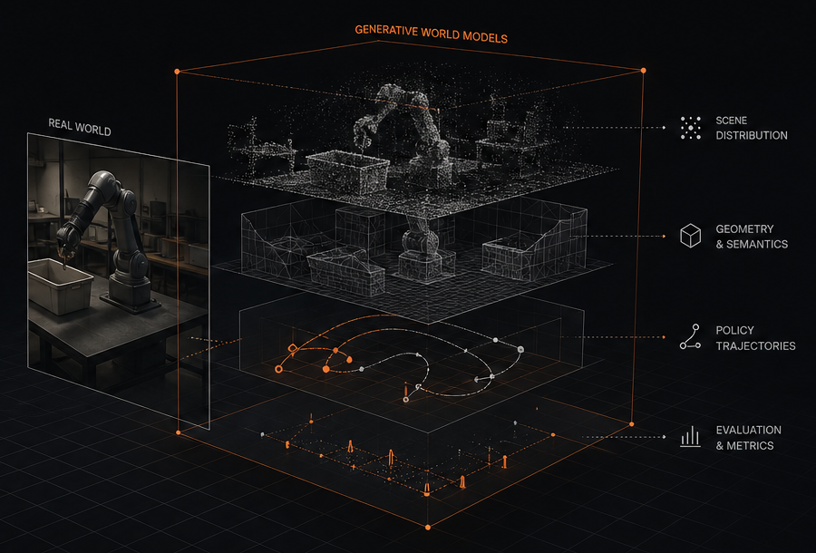

Generate worlds
Capture one real-world task and generate diverse, physically plausible worlds with controllable variation across appearance, geometry, and dynamics.
→Turn one physical task into thousands of controllable, reusable simulated worlds.
World Studio is a world simulator for robotics. Real-to-sim-to-real. Generative world models. Train, test, and evaluate policies at scale before you deploy.

Capture one real-world task and generate diverse, physically plausible worlds with controllable variation across appearance, geometry, and dynamics.
→Run rollouts at scale across generated worlds. Measure performance, discover failure modes, and stress-test before real-world deployment.
→Use simulation evidence to refine data, worlds, and policies. Continuously improve with a real-to-sim-to-real feedback loop.
→World Studio is open source and self-deployable. Use it locally to train policy models, test changes faster, uncover failures earlier, and reduce costly experimentation on hardware.